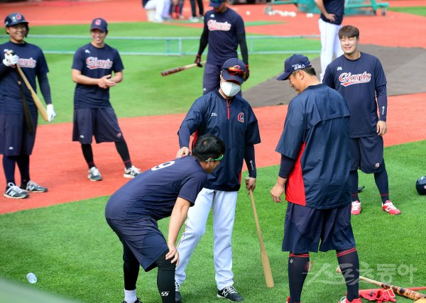

시즌 초반인데 벌써 두 번째 훈련 축소다. 롯데 자이언츠의 상승세를 이끄는 선수단과 코칭스태프의 신뢰가 묻어나는 대목이다.
 롯데는 14일 사직 두산 베어스전에 앞서 경기 전 훈련을 자율로 맡겼다. 수원에서 부산으로 이동한 8일 사직 SK 와이번스전에 앞서 훈련 시작 시간을 늦춘 적에 이어 두 번째다. 선수들은 자신이 필요한 부분을 스스로 판단해 몸을 풀었다. 티 배팅을 치는 선수, 가볍게 캐치볼을 하는 선수부터 간단한 스트레칭만 소화한 선수도 있었다.전날(13일)의 혈투로 지친 선수들을 배려하기 위한 허 감독의 포석이다. 롯데는 13일 사직 두산 베어스전에서 9회 민병헌의 끝내기 홈런에 힘입어 10-9로 승리했다. 동점과 역전이 각 4차례씩 반복된 혈전이었다. 5연승 후 1패를 당했지만 연패 분위기로 잇지 않았다는 수확이 분명한 경기였다. 하지만 그 과정에서 알게 모르게 선수들에게는 피로가 쌓였을 수밖에 없다.
선수단도 자율에 책임을 졌다. 평소보다 30분 늦게 자율적으로 훈련을 하라고 했는데, 모두가 이보다 일찍 그라운드로 나왔다. 가장 먼저 모습을 보인 이는 ‘베테랑’ 이대호였다. 이날 휴식차 선발 명단에서 제외된 정훈이 나와 몸을 풀자 허 감독이 직접 덕아웃으로 돌려보내기도 했다. 고참들이 솔선수범하는 분위기가 형성됐음이 드러난다.
경기 전 허 감독은 “캠프 때부터 자율 훈련의 버릇을 들이고자 했다. 전날 경기에서 힘을 많이 쏟았다. 훈련을 안 하면 불안한 경향을 아직도 느끼는데, 그걸 떨치면 더 좋은 성적이 날 것 같다”고 밝혔다. 이어 “정훈은 그간 너무 많이 뛰어다녔다. 휴식이 중요하다. 1경기 때문에 부상을 입으면 안 된다. 한국시리즈가 아니지 않나”라고 설명했다.